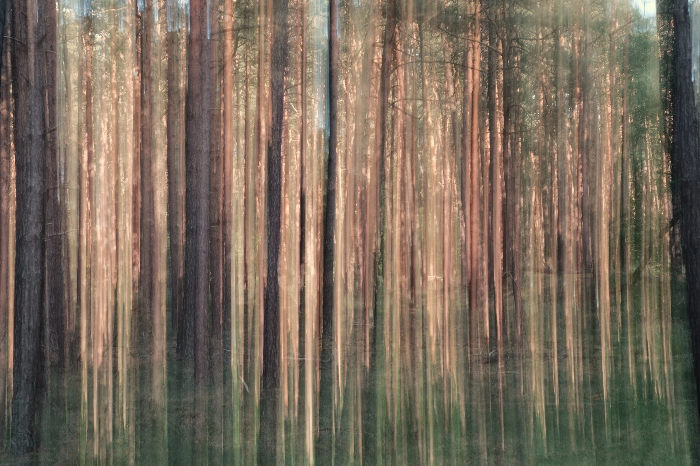
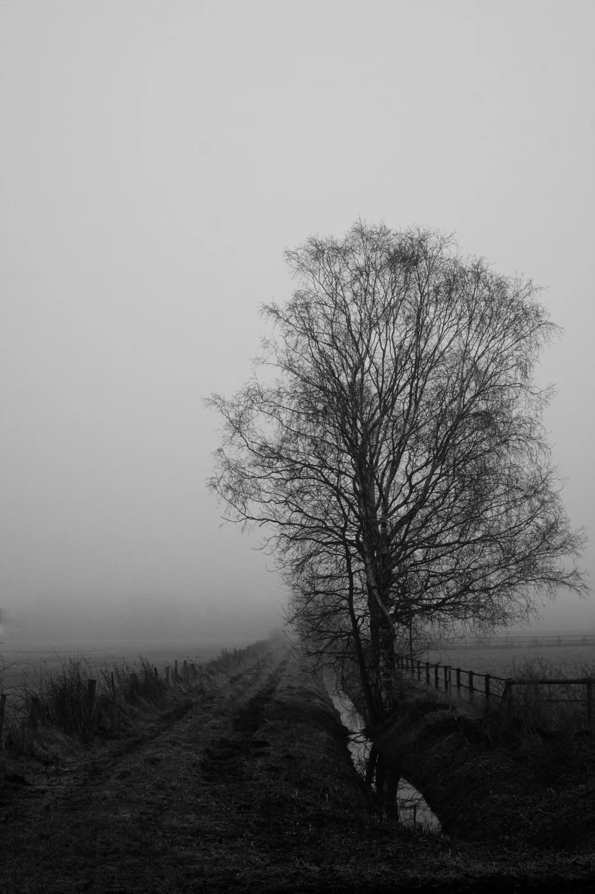
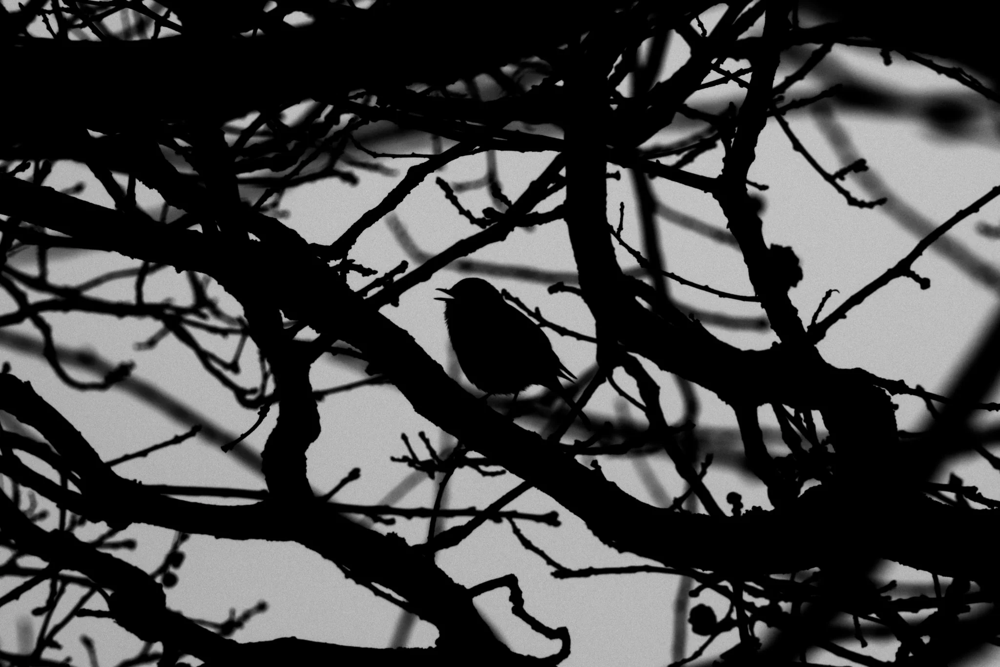
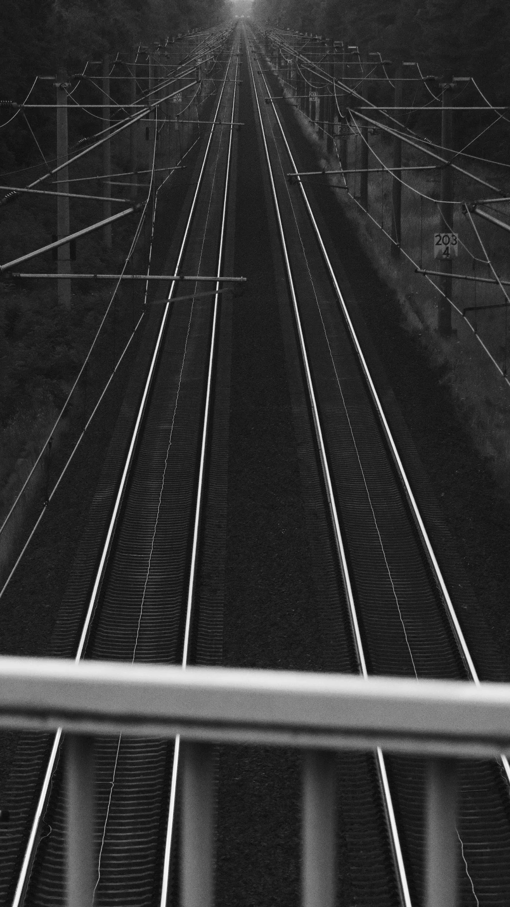
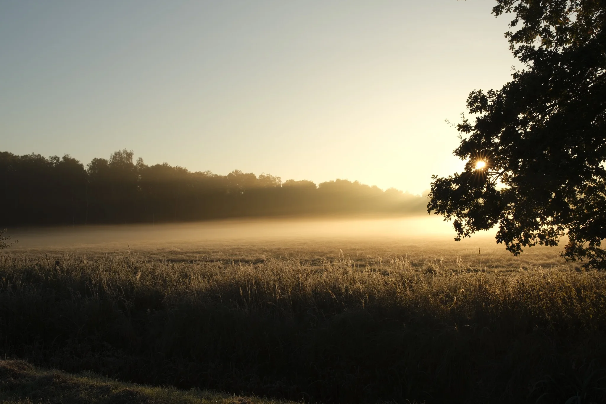
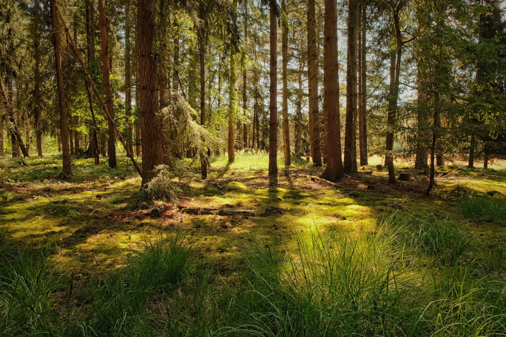
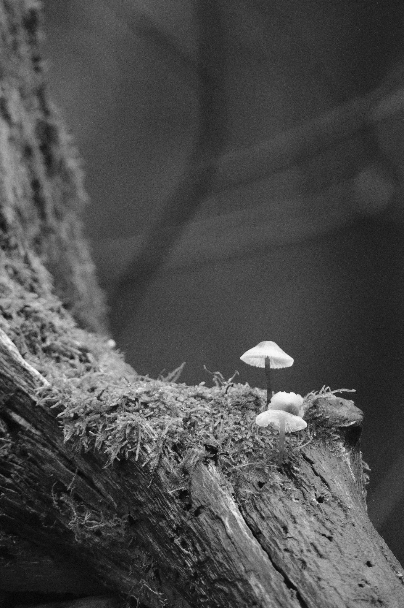
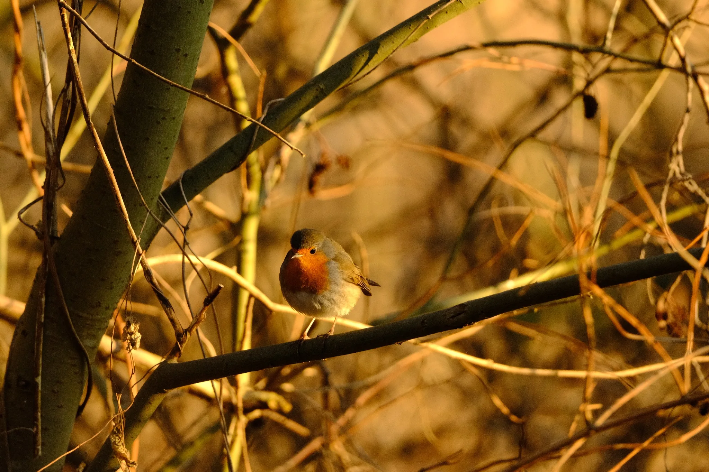
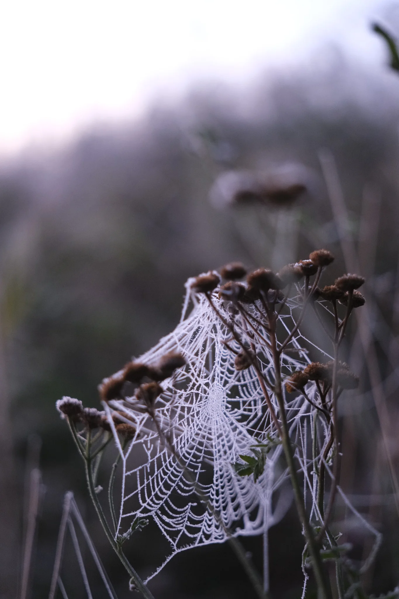

Felix Wach
Selected Work
Eine erste kuratierte Auswahl. Die Struktur ist bewusst offen gehalten, damit später eigenständige Serien wie Nature, Wildlife oder Black & White ergänzt werden können.








